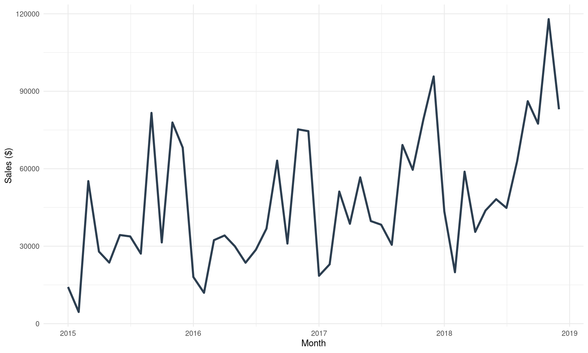
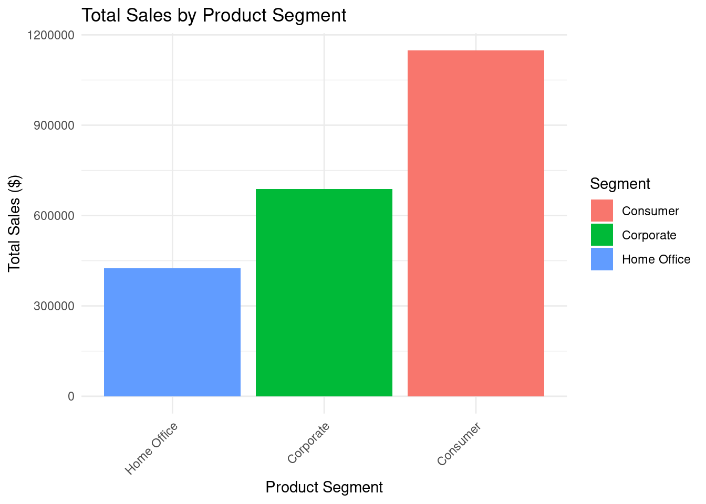
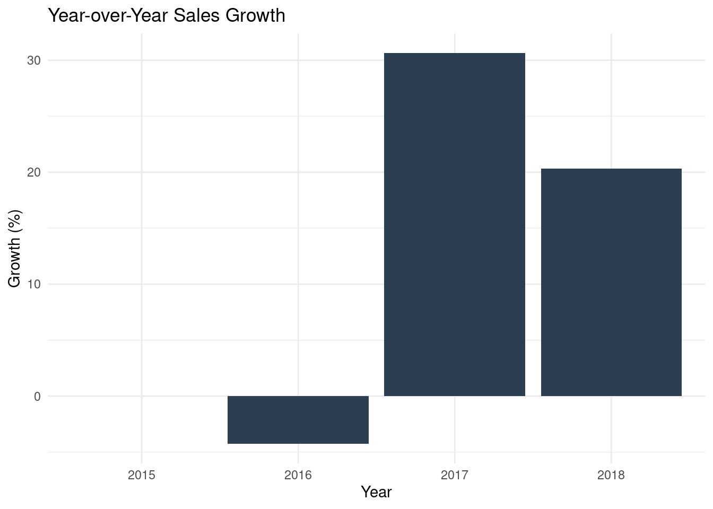
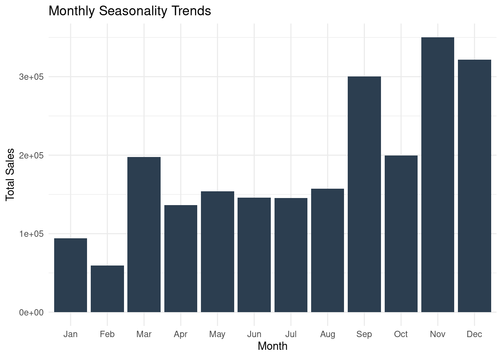
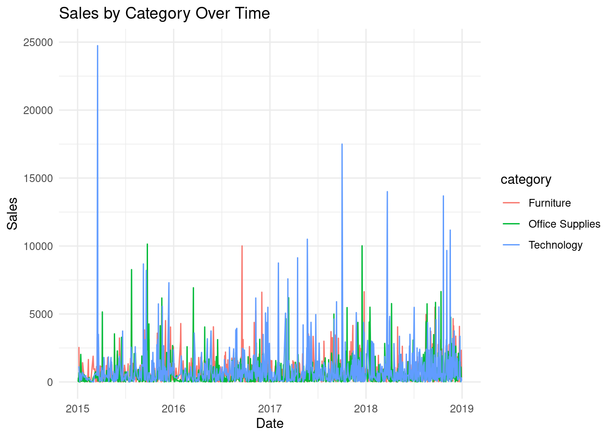
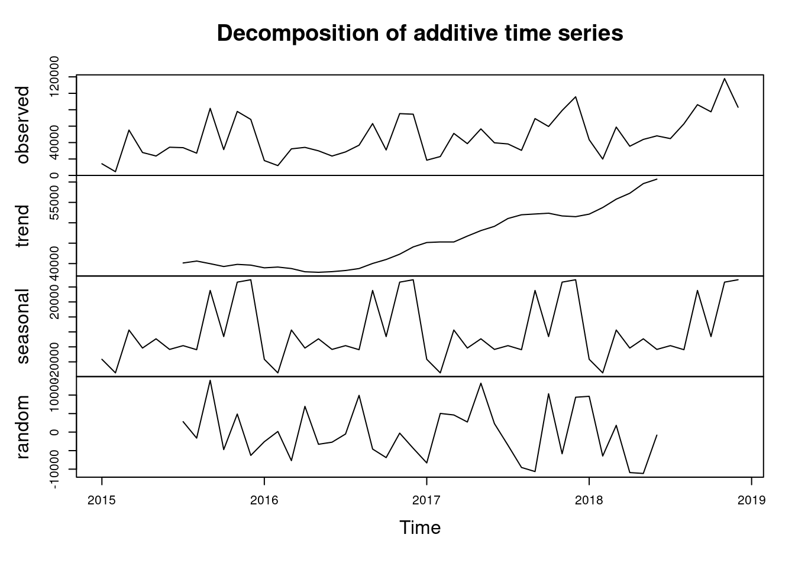

Data Exploration and Summaries
Sales
Visualizations
Financial Analytics
Forecasting
A dashboard summarizing historical sales data and trends.
🛒 About the Dataset
This dashboard is built using a sales dataset from Kaggle that captures four years of transactions from a global superstore. Each row represents a unique order, with details spanning customer segments, order and shipping dates, shipping methods, product categories, and sales revenue.
The dataset enables analysis of key business insights including:
Sales trends over time
Product and category profitability
Customer behavior by segment
📊 Summary Stats
💰 Total Sales
$2,261,537
📦 Number of Orders
4,922
🧮 Avg Sales / Order
$230.77
These metrics provide a high-level overview of the dataset’s performance.
Total Sales reflects the overall revenue generated.
Number of Orders shows the volume of transactions.
Average Sales per Order helps assess the typical order value.
Together, these figures offer a snapshot of business scale and customer purchasing behavior.
🔝 Top 3 Sales Months
🏆 Top 3 Sales Months (Avg Across 4 Yrs)
November: $87,540.43
December: $80,370.04
September: $75,025.85
This section highlights the months with the highest average sales across four years. It reveals seasonal peaks in demand—particularly in November and December, likely due to holiday shopping. This insight is crucial for inventory planning, marketing campaigns, and staffing decisions during high-demand periods.
📅 Sales Over Time
This chart shows total sales over time, aggregated by month
Sales Over Time
This line chart shows how total sales have evolved month by month. It helps identify long-term trends, growth patterns, and anomalies in performance. This view is essential for understanding business momentum and for building time series forecasting models.
📊 Sales by Product Segment
This section will display a bar plot showing total sales for each product segment.
Sales by Product Segment

This bar chart breaks down total sales by customer segment (e.g., Consumer, Corporate, Home Office).
It reveals which segments are the most profitable and where growth opportunities may lie. This information supports targeted marketing and product development strategies.
📈 Year-over-Year (YoY) Sales Growth
This shows how sales have changed each year, helping identify growth trends.
YoY Sales Growth

This chart compares total sales from one year to the next. It quantifies annual growth rates, helping assess whether the business is expanding or contracting. YoY growth is a key metric for investors, executives, and strategic planning.
📅 Monthly Seasonality Trends
This helps identify which months consistently perform better or worse.
Monthly Seasonality

This visualization shows how sales vary by month, averaged across all years. It uncovers recurring seasonal patterns, such as spikes in Q4 or dips in summer. Understanding seasonality is vital for forecasting, budgeting, and resource allocation.
🧾 Sales by Category Over Time
This shows how each product category performs over time.
Sales by Category Over Time

This line chart tracks sales performance for each product category over time. It helps identify category trends, such as rising demand for technology or declining furniture sales.This insight supports product portfolio optimization and category-specific promotions.
🔍 Time Series Decomposition
This breaks down the sales time series into trend, seasonality, and residuals.
Sales by Category Over Time

This analysis breaks down the sales time series into three components:
Trend: the long-term direction of sales.
Seasonality: regular, repeating patterns (e.g., monthly or quarterly).
Residuals: random noise or irregular fluctuations.
Time series decomposition is foundational for forecasting models, as it helps isolate predictable patterns from random variation.
📎 Appendix
This dashboard was created using data from a public Kaggle dataset: Sales Dataset on Kaggle